Node｜head｜previous/current｜有序插入｜STL list｜circular / doubly① 照節次讀：每一節先讀說明，再用動畫觀察指標如何改變。每個動畫都能按「→ 單步」從第 0 步逐格看，或按 ▶ 連續播放。 ② 對照講義：§ 徽章對應課本 cppds 第 4 章的小節；完整內容請回講義 04 與課本原文。 ③ 每節做 quiz：答錯就回到該節重讀，不要往下跳。 ④ 最後讀重點回顧，再翻關鍵詞彙卡（11 張）自測術語，並用 REF 總覽當速查表。
標題中的標記：「（補充）」是講義沒有的延伸內容，收合起來，第一輪可以略過；「（課本）」是課本有、講義沒有的內容；「（課本寫法）」是課本與講義寫法不同時的課本版本。
前面的 ArrayList 建立在連續的原生陣列上。本章改用節點（node）與指標（pointer）組成集合：元素不必放在相鄰的記憶體位置，每個節點記得下一個節點在哪裡。只要知道第一個節點（head），就能沿著指標依序找到其他元素。
串列（List）是一群元素的集合，每個元素相對於其他元素有固定的位置：有第一項、第二項、第三項……。若這個順序與元素的值無關，就稱為無序串列（Unordered List）。定義 ADT 時，講義與課本為了簡化，假設串列中沒有重複的元素。無序串列 ADT 可能包含下列操作：
| 操作 | 作用 | 課程標頭的 UnorderedList |
|---|---|---|
UnorderedList() | 建立空串列 | 提供 |
isEmpty() | 檢查 head == NULL | 提供 |
add(item) | 在 head 加入新元素，$O(1)$ | 提供 |
size() | 回傳元素個數 | 提供 |
search(item) | 回傳 item 是否在串列中 | 提供 |
remove(item) | 移除第一個相等的元素；找不到時串列不變 | 提供 |
append(item) | 把新元素加到尾端，成為最後一項 | 未提供，留作練習 |
index(item) | 回傳 item 的位置 | 未提供 |
insert(pos, item) | 在位置 pos 加入新元素 | 未提供 |
pop()／pop(pos) | 移除並回傳最後一項／位置 pos 的項 | 未提供 |
後四項屬於較完整的串列 ADT。課程標頭 pythonds3/cppds/linked_list.hpp 的 UnorderedList 只實作前六項；append 留到本頁的練習區。
較完整的 ADT 也寫明了各操作的前提：append 與 insert 假設元素原本不在串列中；index 假設元素一定在串列中；insert(pos, item) 假設串列已有足夠的元素，位置 pos 才存在；pop() 假設串列至少有一個元素。實作這些操作時，要先決定違反前提時怎麼處理，例如課程標頭的 remove 在找不到元素時，選擇讓串列保持不變。
ArrayList 把元素放在一段連續的陣列裡，依位置讀取很快，代價是要維持「連續」：在最前面插入一項，後面每一項都得往後搬一格；容量用完時，還要配置更大的陣列並把元素全部複製過去。如果程式經常在前端或中間插入、刪除，這些搬移就會成為主要成本。
串列真正需要維持的只有元素之間的相對順序，並不要求它們在記憶體中相鄰。只要每個元素記得下一個元素在哪裡，順序就保存下來了；找到位置之後，插入或刪除只要改幾個指標，不必搬動其他元素。
下面六個整數放在記憶體中的不同位置。只看它們的位置，看不出誰是第一項、誰排在誰後面。
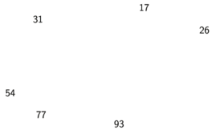
如果每一項都多存一筆明確的資訊，也就是下一項的位置，那麼順著這些連結，從一項走到下一項，就能重建整個順序：
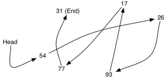
head 出發順著箭頭走，就得到 54、26、93、17、77、31 的順序。值本身的位置仍然分散，順序完全由連結決定；31 是最後一項，後面沒有下一項。這個表示法有兩個必要條件。第一，第一項的位置必須另外記住：知道第一項在哪裡，第一項就能告訴我們第二項在哪裡，依此類推。這個指向第一項的外部參考稱為串列的 head。第二，最後一項必須知道後面沒有下一項，走訪時才知道何時停下。下一節的 Node 類別用一個資料欄位存元素、用 next 指標存下一項的位置，並以 NULL 表示「沒有下一項」。
同樣讀第 k 項（零起始），陣列用位址公式一次算出位置；鏈結串列沒有這種公式，只能從 head 出發，沿 next 一步一步走過去。選一種表示法與 k，用「→ 單步」比較兩者需要的步數。
Node 類別：資料與指向下一個節點的指標 cppds §4.4節點是鏈結串列的基本單位。每個節點至少保存兩項資訊：資料欄位 data 存放元素本身，next 指向下一個節點。講義把 Node 寫成類別模板，T 是元素的型別：Node<int> 存整數，Node<string> 存字串，鏈結的寫法完全相同。
Node 類別（pythonds3/cppds/linked_list.hpp）data 與 next 兩個欄位都是 private。串列的程式與使用者的程式都只能透過 getData()、getNext()、setData()、setNext() 存取節點；直接寫 node->next 是刻意不允許的寫法，無法通過編譯。
| 成員函式 | 作用 | 會不會改變節點 |
|---|---|---|
Node(T initdata) | 建構子：data 設成 initdata，next 設成 NULL | 建立新節點 |
getData() const | 回傳資料欄位的值 | 不會（const） |
getNext() const | 回傳 next 指標，也就是下一個節點的位址；沒有下一個節點時回傳 NULL | 不會（const） |
setData(newData) | 把資料欄位改成 newData | 只改資料，不改鏈結 |
setNext(newnext) | 把 next 改成指向 newnext | 改變鏈結 |
兩個 get 函式標成 const，表示呼叫它們不會修改節點，所以在 size()、search() 這類 const 成員函式裡也能使用。要特別分清楚 setData 與 setNext：前者只換掉節點裡的值，後者才會改變節點之間的連接方式。
private 欄位：無法編譯編譯器會指出 next 是 private 成員。要讓節點不指向任何東西，應該寫 temp->setNext(NULL)。
用 new 在 heap 配置節點，取得它的位址；用 -> 透過指標呼叫方法；用完後以 delete 釋放。按 → 單步，看 temp 在每一行之後指向什麼。
NodeNode 的使用93 0
第一行是節點的資料 93。第二行印出 next 指標：新節點的 next 是 NULL，用 cout 印出空指標時會顯示 0。
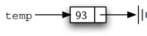
new Node<int>(93) 建立的節點：temp 存的是節點的位址，資料欄位是 93；next 由建構子設成 NULL，圖中以接地符號表示「後面沒有節點」。NULL：沒有下一個節點C++ 的特殊指標值 NULL 在 Node 類別與之後的串列中都很重要：next 等於 NULL，表示這個節點後面沒有節點。之後的 size、search、remove 都是走到 NULL 才停下，串列的 head 等於 NULL 則表示串列是空的。
注意建構子把 next 明確設成 NULL。指標若沒有初始化，裡面是無法預測的值；把它當成位址去讀取，結果是未定義行為，程式可能當掉，也可能看似正常卻讀到錯誤的資料。所以建立指標時，一律先給它明確的初值。課本把 next 為空的節點稱為 grounded（接地），圖中用電路的接地符號表示（課本）。
Node<int> *p = new Node<int>(93);p->getData() // 93p->getNext() // NULLdelete p; // 釋放節點p->getNext() 透過指標 p 呼叫節點的方法，等同於 (*p).getNext()；使用前要確認 p 指向有效的節點。講義使用 NULL 表示空指標；現代 C++ 通常寫 nullptr，兩者在這裡的意思相同。
指標只記住位置，不會複製節點：令 current = head 只複製位址，兩者指向同一個節點；令 current = current->getNext() 只移動 current，不會改變 head 或任何鏈結。current->setData(42) 修改節點的資料，previous->setNext(current) 才會修改鏈結。
setNext 手動接起三個節點（補充）54 27 93 1
setNext 決定誰接在誰後面；setData(27) 只改了第二個節點的值，鏈結不變。while 迴圈用 current 沿 next 前進、遇到 NULL 停下，這就是下一節 size 與 search 使用的走訪寫法。
UnorderedList：add、size、search、remove 如何走訪與更新指標 cppds §4.3–4.5無序串列的類別本身不存放任何節點，只保存一個指向第一個節點的指標 head。以下依序實作 add、size、search、remove；其中 size、search、remove 都建立在走訪（traversal）上：用一個外部指標從 head 出發，沿著 next 逐一拜訪節點，直到遇到 NULL。
head 與空串列UnorderedList 的資料成員與建構子UnorderedList<int> myList; 會建立空串列：建構子把 head 設為 NULL，此時沒有任何節點。
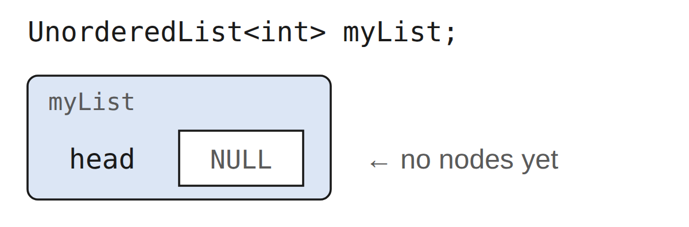
head 欄位，值為 NULL：這時還沒有任何節點。串列物件本身不存放元素，只記住第一個節點在哪裡。和 Node 一樣，這裡的 NULL 表示 head 沒有指向任何節點。加入元素之後，前面那六個整數最後會以下面的鏈結形式存放：
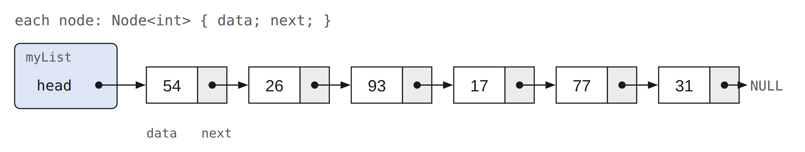
add 之後的串列：myList 只保存 head，head 指向資料為 54 的第一個節點；每個節點的 next 指向下一個節點，最後一個節點 31 的 next 是 NULL。head 指向第一個節點，第一個節點存放串列的第一項，並指向下一個節點，依此類推。要特別注意：UnorderedList 物件本身並不包含任何節點，它只保存一個指向鏈結結構中第一個節點的指標；節點都是用 new 另外配置在 heap 上的。
isEmpty() 只要檢查 head 是否為 NULL：串列沒有任何節點時，正好回傳 true。它只看一個指標，所以是 $O(1)$。
isEmptyisEmptyisEmpty 與 sizetrue 0 false 1
剛建立的 myList 是空串列：isEmpty() 為 true、size() 為 0。加入 31 之後，head 指向一個節點，isEmpty() 變成 false。
add：把新節點放在 head無序串列不在乎新元素放在哪裡，所以放在最容易的位置。其他節點都只能從 head 沿 next 走到，唯有第一個節點可以直接存取，因此新節點加在 head。連續執行 add(31)、add(77)、add(17)、add(93)、add(26)、add(54) 之後，最先加入的 31 在最後面，最後加入的 54 在最前面。
第 3 行先讓新節點的 next 接住原本的第一個節點，第 4 行才讓 head 指向新節點。按 → 單步觀察：在第 3 行之後，head 與新節點同時指向 93，所以後段不會遺失。
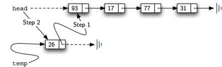
temp 的 next 接到 93，再讓 head 指向 26。兩步完成後，原來的後段仍完整連在新節點後面。add，每次印出串列add(31)、add(77)、add(17)、add(93)、add(26)、add(54)31 77 31 17 77 31 93 17 77 31 26 93 17 77 31 54 26 93 17 77 31
每一行都比上一行多一個值，而且新值總是出現在最前面：最先加入的 31 一路被推到最後，最後加入的 54 成為第一個節點。
兩行的順序不能對調。若先執行 head = temp，原本唯一指向 93 的 head 就被改掉，原來的節點再也找不到，也無法 delete；接著 temp->setNext(head) 讓新節點指向自己。
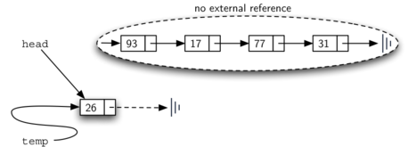
head 的結果：head 與 temp 都指向新節點 26，原本的 93 → 17 → 77 → 31 被圈在 no external reference 中，沒有任何指標能到達它們。圖中 26 的 next 還是空的；接著執行 temp->setNext(head)，它就會指向自己。add 的兩行順序add 裡若把兩行寫反（先 head = temp，再 temp->setNext(head)），會發生什麼事？
size：走訪並計數current 從 head 出發；每進入一次迴圈，先把 count 加一，再讓 current 沿 next 前進。current 變成 NULL 時，每個節點都恰好數過一次。這份實作沒有另存元素個數，所以 size() 是 $O(n)$；若類別另外維護一個計數成員，size() 可以是 $O(1)$，代價是每次新增與刪除都要更新它。
以六個節點的串列為例，current 依序停在每個節點，最後停在 NULL：
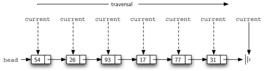
size() 的走訪：current 每前進一次，count 就加一。current 在六個節點各停一次，走到 NULL 時迴圈結束，count 為 6。第 2 行讓 current 指向 head，這時還沒看過任何節點，所以 count 從 0 開始。第 4 至 6 行是走訪本身：只要 current 還沒走到串列結尾（NULL），就把 count 加一，再用第 6 行的指定敘述讓 current 移到下一個節點。能把指標拿來和 NULL 比較，是走訪能停下來的關鍵。迴圈結束後回傳 count。空串列時 current 一開始就是 NULL，迴圈一次也不執行，回傳 0。
size 的三種情況size()：空串列、六個節點、刪除一個之後0 6 5
search：找到就停search 也從 head 開始走訪，每到一個節點就比對資料：相等就立刻回傳 true，不必再往後找；不相等才前進。走到 NULL 表示每個節點都比過了，回傳 false。
講義以 myList.search(17) 為例：17 在串列中，走訪到它所在的節點就停下，search(17) 回傳 true。
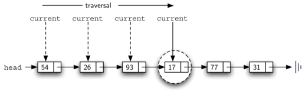
search(17)：current 走過 54、26、93 都不相等，到 17 時相等，立刻回傳 true。後面的 77、31 不必再比較。若一路走到串列結尾都沒遇到，就表示要找的元素不在串列中；反過來，一旦找到就不必繼續往後走。所以找得越前面，比較次數越少；找不到時，每個節點都要比較一次。
search 找到與找不到search(17)、search(54)、search(45)54 26 93 17 77 31 true true false
17 在第四個節點，比較四次就回傳 true；54 是第一個節點，比較一次就找到；45 不在串列中，要比較完六個節點、走到 NULL 才回傳 false。
remove：previous 跟在 current 後面remove 分兩步：先像 search 一樣找到第一個相等的節點，再把它從鏈結中移除並 delete。找到時 current 指向要刪的節點，但要修改的是前一個節點的 next；單向串列無法往回走，current 停下時已經越過了要修改的位置。
解決辦法是走訪時同時用兩個外部指標：current 和之前一樣標出目前走到哪裡；新的 previous 一直落後 current 一個節點。這樣 current 停在要刪的節點時，previous 正好指向要修改的那個節點。前進時必須先執行 previous = current，再移動 current。開始時 previous 是 NULL，因為 current 指向的第一個節點前面沒有節點。
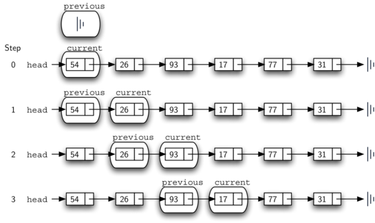
previous 先移到 current 的位置，current 再前進一格，所以 previous 永遠落後 current 一個節點。步驟 3 時 current 停在 17，previous 正好停在要修改的前一個節點 93。remove 開始時的 previous 與 current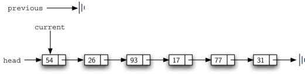
remove 開始時的兩個指標：current 從 head 指向的 54 開始，previous 還沒有對應的節點，所以是 NULL。有一個特殊情況要處理：要刪的正好是第一個節點時，current 指向第一個節點，previous 仍是 NULL。這時沒有「前一個節點」可以修改，要改的是串列的 head。
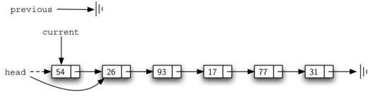
previous 仍是 NULL。這時沒有前一個節點可以修改，要改的是 head：讓 head 改指 54 的下一個節點 26。第 16 行檢查這個情況：previous 沒有移動過，迴圈結束時仍是 NULL，就讓 head 改指 current 的下一個節點（第 17 行），等於把第一個節點從串列中移除；否則要刪的節點在串列中段或尾端，previous 就是 next 需要修改的節點（第 19 行）。兩種情況的新目標都是 current->getNext()。節點脫離鏈結後，第 21 行 delete current 釋放它；C++ 沒有垃圾回收，少了這一行就會留下無法再釋放的記憶體。串列的解構子也用同樣方式釋放剩下的所有節點。另一種做法是在最前面放一個不存資料的 header 節點，讓第一個資料節點也有前一個節點，就不需要這個特殊情況；這留作練習。
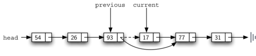
previous 位於 93，current 位於 17。讓 93 的 next 改指向 77，串列便跳過 17；接好後再釋放 17 的節點。remove(17) 前後的串列54 26 93 17 77 31 54 26 93 77 31 5 false
17 被跳過後，93 直接接到 77，串列剩 5 個節點，再搜尋 17 得到 false。
ADT 說明假設串列沒有重複元素。課程標頭的實作其實接受重複值：add 不檢查，remove 只刪第一個相等的節點。課本的 remove 假設要刪的項目一定在串列中；講義與課程標頭則在找不到時不做任何修改。
remove(26) 的指標更新步驟從六次 add 後的串列 54 → 26 → 93 → 17 → 77 → 31 開始。
| 步驟 | previous | current | found | 動作 |
|---|---|---|---|---|
| 開始 | NULL | 54 | false | current = head |
| 比對 54 | 54 | 26 | false | 不相等：previous 先移到 current，current 再前進 |
| 比對 26 | 54 | 26 | true | 相等：found = true，離開迴圈 |
| 移除 | previous->setNext(current->getNext()) | 54 改指 93，26 被跳過 | ||
| 釋放 | delete current | 釋放 26 的節點 | ||
各種情況下，remove 要更新哪個指標，整理如下：
| 情況 | head 或前驅的更新 | 結果 |
|---|---|---|
空串列 remove | 不更新 | 仍為空 |
| 只剩一個節點且命中 | head = current->getNext()，也就是 NULL | 變成空串列 |
| 刪頭 | head = current->getNext() | 新的 head 是原本的第二個節點 |
| 刪中間 | previous->setNext(current->getNext()) | 前後兩段接回 |
| 刪尾 | previous->setNext(NULL) | previous 成為最後一個節點 |
| 找不到 | 不更新 | 串列不變 |
| 多個相同值 | 只跳過第一個命中的節點 | 其餘相同值保留 |
① 要刪的是最後一個節點時，上面兩種情況夠用嗎？② 串列只有一個節點，而且正是要刪的節點時呢？先自己推演，再展開答案。
① 刪最後一個節點時，previous 指向倒數第二個節點，current->getNext() 是 NULL，於是 previous->setNext(NULL)，previous 成為新的最後一個節點，不需要另外處理。② 只有一個節點時，迴圈第一次比對就命中，previous 仍是 NULL，執行 head = current->getNext()，head 變成 NULL，串列成為空串列。上面的動畫可以選「刪尾端 31」與「唯一節點 7」對照。
remove 的特殊情況26 93 17 77 31 26 93 17 77 26 93 17 77 true
刪 54 時 previous 是 NULL，改的是 head，新的第一項是 26。刪 31 時 previous 停在 77，77 的 next 變成 NULL。remove(45) 找不到，串列不變。唯一的節點被刪掉後，head 變成 NULL，串列又是空的。
UnorderedList 的 add、size、search、removeUnorderedList 全套操作54 26 93 17 77 31 6 true 26 17 77
第一行可以看出 add 採用頭插：最後加入的 54 排在最前面。三次 remove 分別刪除頭端、中間與尾端的節點。
cout << myList 如何印出串列（補充）operator<<範例中的 cout << myList 使用標頭裡的 operator<<：它同樣從 head 走訪，每個值後面接一個空格，所以輸出的行尾有一個空格。
true true 30 20 10 20 10 20
串列物件擁有它用 new 配置的節點：解構子要逐一 delete；複製建構子與複製指派要複製整條鏈（deep copy）。若只複製 head，兩個串列會共用同一批節點，之後可能重複釋放。課程標頭已依這個規則實作。
OrderedList：維持大小順序的串列 cppds §4.6–4.7有序串列（Ordered List）中，每個元素的相對位置由元素本身的某種特性決定，通常是遞增或遞減；這裡假設元素之間已有明確的比較運算。前面的整數若改成遞增的有序串列，就是 17、26、31、54、77、93：17 最小，排在第一個位置；93 最大，排在最後。
有序串列的許多操作與無序串列相同：
OrderedList() 建立空的有序串列。add(item) 加入新元素，並維持排序。remove(item) 移除第一個相等的元素；找不到時串列不變。search(item) 回傳元素是否存在；越過目標應在的位置後就可以停止。isEmpty() 檢查 head 是否為 NULL；size() 以走訪計算節點數。較完整的有序串列 ADT 還有 index、pop 等依位置的操作，課程標頭的 OrderedList 沒有提供。實作方式與無序串列相同：空串列仍以 head == NULL 表示，isEmpty() 與 size() 的寫法不變。search、add、remove 則可以利用排序。
前面的遞增串列 17、26、31、54、77、93 可以用下面的鏈結結構表示。節點與連結同樣適合表示元素的相對位置：
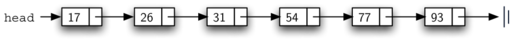
next 的接法和無序串列相同，差別只在節點的順序由值的大小決定。實作 OrderedList 的方法和無序串列相同，空串列一樣以 head 指向 NULL 表示：
OrderedList 的資料成員與建構子search：越過目標就停止無序串列的 search 要逐一走訪節點，直到找到目標或走到 NULL。有序串列沿用同一個方法也完全正確：目標在串列中時，做法不需要任何修改。差別在目標不在串列中的時候，可以利用排序盡早停下。
以搜尋 45 為例：從 head 開始，先比 17，不是要找的值，前進到 26；仍然不是，再前進到 31、54。到 54 時情況不同了：照原本的策略要繼續往後，但串列是遞增的，54 已經比 45 大，後面的 77、93 只會更大，45 不可能出現在更後面，可以直接回傳 false。
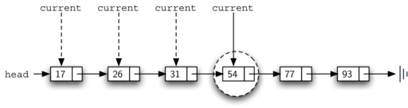
false。只要在迴圈中多加一個判斷（第 6 行）：節點的值大於目標時立刻回傳 false。走訪只在節點的值小於目標時才繼續。
searchsearch(45)、search(31)、search(10)、search(100)17 26 31 54 77 93 false true false false
四個呼叫的比較次數不同：search(45) 比到 54 就停（4 次）；search(31) 在第 3 個節點找到；search(10) 第一次比較就看到 17 > 10，立刻停止；search(100) 比所有值都大，要走完全部 6 個節點才回傳 false。
add：先找到位置再接上改動最大的是 add。無序串列的 add 可以直接把新節點放在 head，因為那裡最容易存取；有序串列不能這樣做，必須先找出新元素在現有排序中的位置。例如在 17、26、54、77、93 中加入 31，add 要判斷出新節點屬於 26 與 54 之間：
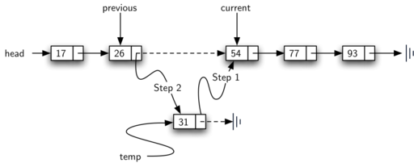
previous、current 兩個指標標出插入點，課本的寫法也用這兩個名稱：Step 1 先讓新節點接上後段的 54，Step 2 再讓 26 改指新節點。講義的 add 只用一個 current，它停在 26，用 current->getNext() 看到 54，接線順序一樣是先接後段、再接前段。和無序串列的 remove 一樣，光靠停在 54 的指標無法修改 26 的 next，所以需要知道插入點前一個節點。圖中用 previous 與 current 兩個指標標出這個位置；講義的程式則只用一個 current，改成每次先看下一個節點。
講義的 add 只用一個 current，並且每次先看下一個節點：若串列是空的，或 head 的值已經大於或等於 item，新節點直接放在最前面；否則 current 從 head 出發，只要 current->getNext() 不是 NULL，而且它的值小於 item，就前進一步。停下時，新節點要接在 current 後面：先 newNode->setNext(current->getNext())，再 current->setNext(newNode)。和相等的值比較時不會前進，所以重複值會插在原有相等值的前面。
add：previous 與 current 兩個指標（課本寫法）OrderedList::add課本用 previous 與 current 兩個指標：current 遇到大於 item 的值才停止，新節點插在 previous 與 current 之間；previous 仍是 nullptr 時，新節點放在最前面。因為遇到相等的值不會停，重複值會排在原有相等值的後面，這點和講義版相反。兩種寫法都能維持遞增順序。
addadd(31)、add(10)、add(100)17 26 54 77 93 17 26 31 54 77 93 10 17 26 31 54 77 93 10 17 26 31 54 77 93 100
不論加入順序為何，印出來永遠由小到大。31 插在 26 與 54 之間；10 比 head 的 17 小，成為新的 head；100 比所有值大，current 一路走到最後一個節點 93，新節點接在它後面。
remove：利用排序提早放棄有序版的 remove 在 current 的值小於 item 時前進。迴圈停下後，若 current 是 NULL，或它的值不等於 item，就表示 item 不在串列中，直接 return；找到時的接線與 delete 和無序串列相同。
removeremove(54)、remove(17)、remove(45)17 26 31 77 93 26 31 77 93 26 31 77 93 4
remove(54) 在 54 停下並找到它，31 改接 77。remove(17) 刪的是第一個節點，previous 仍是 NULL，改的是 head。remove(45) 走到 77 時已經比 45 大，迴圈停下，77 不等於 45，直接 return，串列不變。
OrderedListOrderedList17 26 31 54 77 93 6 true false 17 26 54 77 93
同樣加入六個值，輸出卻由小到大排列，差別全在 add 內部先找位置再插入。remove(100) 找不到目標，串列不變。
search元素不在串列中時，OrderedList 的 search(item) 比 UnorderedList 的版本多了什麼優勢？
判斷方式是看操作是否需要走訪。isEmpty() 只看 head，是 $O(1)$；size() 沒有另存個數，必須數完 n 個節點，是 $O(n)$。無序串列的 add 在 head 插入，是 $O(1)$；search、remove，以及有序串列的 add 都可能走完整條串列，最壞情況是 $O(n)$。有序搜尋可以提早停止，但最壞情況仍是 $O(n)$。已經握有前驅的指標時，插入或刪除一個節點只要 $O(1)$；找到那個位置則可能需要 $O(n)$。
若搜尋成功，而且每個位置被找到的機會相同，平均約檢查 $\frac{n}{2}$ 個節點，平均成本仍是 $O(n)$。
下列 UnorderedList 的成員函式中，哪一個在平均與最壞情況下都是 $O(1)$？
成功搜尋 n 個位置的比較次數依序為 1、2、…、n。若每個位置等可能，平均為 $\frac{1+2+\cdots+n}{n}=\frac{n+1}{2}$，約為 $\frac{n}{2}$；因此隨 n 線性成長。
鏈結串列與連續陣列的取捨正好相反：串列在前端插入是 $O(1)$、依位置存取是 $O(n)$；陣列依位置存取是 $O(1)$、在前端插入則要搬移元素。哪一種較合適，取決於程式最常做哪些操作。各操作的完整比較見操作成本總覽。
假設搜尋成功，而且每個位置被找到的機會相同，平均約檢查 $\frac{n}{2}$ 個節點。為什麼仍寫成 $O(n)$？
二分搜尋每一步都要直接取得中間的元素。陣列可以用索引一次算出中點；鏈結串列沒有這種索引，要找到中間節點就得從 head 走過去。因此有序串列不能直接套用陣列二分搜尋的 $O(\log n)$ 成本。
上面的分析把單一元素的比較、複製與解構視為 $O(1)$，只計算走訪多少個節點、更新多少次指標。若節點存放的物件需要較多時間才能比較、複製或解構，還要把這些成本加進去。
std::forward_list 與 std::list cppds §4.7UnorderedList 與 OrderedList 讓你看清楚指標怎麼接、節點由誰釋放。實際寫程式時，優先使用 STL 容器：它們的解構、複製、迭代器與例外安全都已有明確規範並經過測試。
std::forward_list<T> 是單向串列，提供 push_front、insert_after、erase_after；std::list<T> 是雙向串列，可以用雙向迭代器在指定位置插入或刪除。兩者都不支援依索引的隨機存取。插入與刪除是 $O(1)$ 的前提是：手上已經有對應位置的迭代器。
forward_list 與 list17 31 54 17 26 31 54
singly.insert_after(singly.before_begin(), 17) 插在「第一項之前的位置」後面，也就是成為新的第一項。next(doubly.begin()) 指向 31，doubly.insert(pos, 26) 把 26 插在 31 前面。
vector | forward_list（單向） | list（雙向） | |
|---|---|---|---|
| 依索引存取 [i] | $O(1)$ | 不提供 | 不提供 |
| 頭端插入 | $O(n)$ | $O(1)$ push_front | $O(1)$ push_front |
| 尾端插入 | 攤銷 $O(1)$ | 不提供 push_back | $O(1)$ push_back |
| 已知位置插入／刪除 | $O(n)$ | $O(1)$ insert_after／erase_after（給前驅） | $O(1)$ insert／erase |
| 每個元素的額外空間 | 預留容量 | 一個 next 指標 | prev 與 next 兩個指標 |
| 記憶體位置 | 連續，對快取友善 | 節點分散在 heap 各處 | |
forward_list 的常用操作（課本）forward_list 的插入與刪除都作用在指定元素的後面：insert_after、erase_after。課本列出的常用操作如下：
| 操作 | 說明 |
|---|---|
forward_list<T> a; | 建立空的 forward_list |
push_front(x)／emplace_front(...) | 在最前面加入元素；emplace 版就地建構元素 |
pop_front() | 移除第一個元素 |
insert_after(it, x)／emplace_after(it, ...) | 在 it 指向的元素後面加入 |
erase_after(it) | 刪除 it 後面的元素（也可以刪除一段範圍） |
clear() | 移除所有元素 |
vector：元素連續存放，對快取友善。經常在已知位置插入或刪除，而且手上已有該位置的迭代器時，再考慮 list 或 forward_list。insert_after？forward_list 只提供 insert_after，不提供 insert（插在某個節點前面）。原因是？
std::list 的頭尾增刪與迴圈中的刪除（補充）35 size = 1
begin() 指向第一項，end() 是尾後位置，不能解參考。list 的 insert(pos, x) 插在 pos 前面並回傳新元素的位置；erase(it) 回傳被刪元素的下一個位置，迴圈中刪除時要用這個回傳值繼續，不能對已刪除的 it 做 ++it。
forward_list 的 before_begin() 是「第一項前面」的位置，不能解參考，但可以傳給 insert_after／erase_after，讓頭端也用同一套寫法。刪除 current 時 previous 留在原地，current 接回 erase_after 的回傳值；保留 current 時兩者才一起前進，這正是前面 previous／current 的關係。forward_list 沒有 size()；std::distance(begin(), end()) 需要 $O(n)$。
std::forward_list 與 before_begin()（補充）10 count = 1
remove、unique、sort 成員函式（補充）3 1 3 2 1 2 1 1 2 1 2
兩種串列都有成員函式 remove(x)、unique()、sort()。remove(x) 刪掉所有等於 x 的元素，和本課 remove 只刪第一個不同；unique() 只合併相鄰的相等值；sort() 是穩定排序，約需 $O(n \log n)$ 次比較。std::sort 需要隨機存取迭代器，不能用在這兩種串列上。插入不會使其他元素的迭代器失效；刪除只會使被刪元素的迭代器失效。
以下是講義在本章最後介紹的兩種延伸：環狀串列與雙向串列。兩者的節點與單向串列相同，都是資料加上指標；差別在指標怎麼連接：環狀串列讓結尾接回開頭，雙向串列讓每個節點同時記住前後兩個鄰居。
讓最後一個節點的 next 指回第一個節點，就得到環狀鏈結串列（Circularly Linked List）。下圖中 tail 指向最後一個節點 17，它的 next 不是 NULL，而是繞回 head 指向的 54：
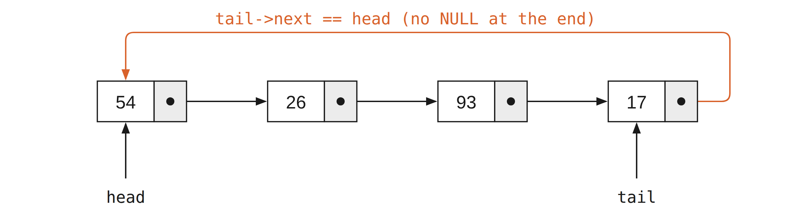
next 不是 NULL，而是指回第一個節點 54，所以 tail->next 就是 head。從任何一個節點出發，沿 next 走都會回到原點。它適合描述沒有明確起點與終點的循環資料，例如列車沿環狀路線停靠的站點，或遊戲中玩家輪流的順序。環本身沒有頭尾，但程式仍要保存某個節點的指標，才能使用這個串列。
前進的寫法一樣是 current = current->getNext()；但串列中沒有 NULL，所以走訪改成判斷是否回到出發的節點。空串列要先排除；只有一個節點時，它的 next 指向自己。
append講義指出，環狀串列適合輪流分配資源，也方便實作 append 一類的操作：若保存最後一個節點 tail，tail->getNext() 就是第一個節點，在頭端或尾端加入都只要 $O(1)$。只保存 tail 就夠了，不必另外保存 head。
以輪流使用資源為例：current 指向目前輪到的工作，處理完一段時間後執行 current = current->getNext()，就換到下一個工作；走到最後一個工作之後，會自然回到第一個，不需要另外判斷「是否到尾端、要不要回到開頭」。
環狀只改變結尾的接法，並沒有增加反向走訪的能力：要刪除某個節點，仍然需要它前一個節點。另外，因為串列中沒有 NULL，任何以「走到 NULL 為止」寫成的迴圈，在環狀串列上都不會結束；釋放節點時，也要先把環斷開，或改用「回到起點為止」的條件。
tail 做 append（補充）Node 建立、do-while 走訪54 26 93 17 54 54 26 93 17 11 93 17 11 54 26
printCircular 用 do-while：先印出起點，再前進，回到起點時停止。第二行確認 tail->getNext() 就是 54。append(11) 只改兩個指標，11 成為新的 tail，並指回 54。最後一行從 93 開始走，也能走完一整圈。釋放前先把 tail 的 next 設成 NULL，就能用一般串列的方式逐一 delete。
單向串列可以有效率地在頭端插入與刪除，也能在保存 tail 時快速加到尾端，但刪除尾端不容易：必須先找到倒數第二個節點。問題其實更普遍：只拿到某個節點的指標時，找不到它的前驅，也就無法立刻刪除它。
為了讓兩個方向對稱，雙向鏈結串列（Doubly Linked List）讓每個節點同時保存指向後一個節點的 next 與指向前一個節點的 prev，因此能在任意位置以 $O(1)$ 完成更多種更新；需要反向走訪的演算法（例如檢查回文）也適合使用。
講義的設計在兩端各放一個不存使用者資料的哨兵節點（sentinel）：header 與 trailer。非空串列中，header 的 next 指向第一個資料節點，trailer 的 prev 指向最後一個資料節點；空串列時兩者直接相連。這樣每次插入都發生在兩個既有節點之間，每個要刪除的資料節點兩側也一定有鄰居，所以頭端、尾端與中間都能用同一套接線。走訪時要在 trailer 停下，哨兵不能當成資料讀取或刪除。
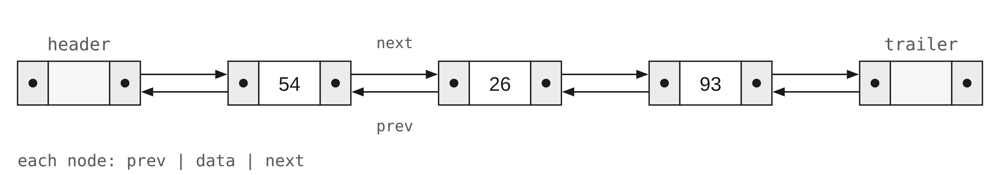
header 與 trailer 哨兵。每個資料節點都有前後兩個鄰居；刪除第一項或最後一項時，也能把兩側鄰居接回。哨兵本身不代表資料。哨兵的代價是每個串列多兩個不存資料的節點，換來的是程式裡不再需要「是不是第一個節點」「是不是最後一個節點」這類特殊情況。對照單向串列的 remove：刪除第一個節點時 previous 是 NULL，必須改成修改 head；有了 header，第一個資料節點前面永遠有一個節點，特殊情況就消失了。
每次插入都發生在兩個既有節點之間。例如把新元素放在最前面，就是把新節點放在 header 與目前 header 後面的節點之間。下圖把 77 插在 26 與 93 之間：pred 是左邊的鄰居，succ 是右邊的鄰居。
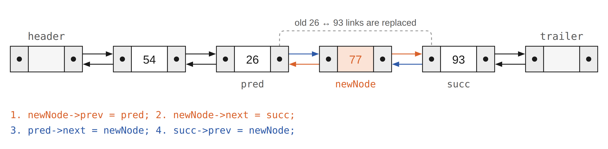
prev 與 next，藍色的後兩步再讓兩個鄰居改指新節點，原本 26 與 93 之間的兩條連結就被取代。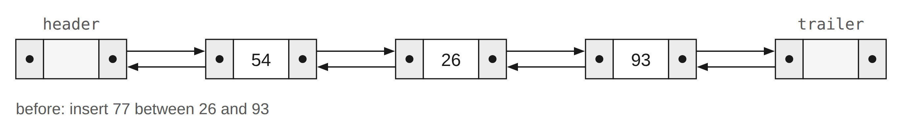
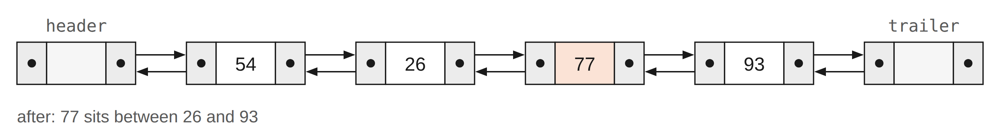
四行的順序有講究：前兩行只設定新節點自己的 prev 與 next，這時兩個鄰居都還沒改，原本的串列完整無缺；後兩行才讓 pred 的 next 與 succ 的 prev 改指新節點。下面的動畫照這四行逐步執行：先設定 newNode 自己的 prev、next，再讓 pred、succ 改指 newNode，共四個指標：
header、trailer 哨兵建立雙向串列並插入| 54 26 93 | 93 26 54 54 26 77 93 | 93 77 26 54 10 54 26 77 93 | 93 77 26 54 10
每一行先由 header 往後印，直線後再由 trailer 往前印；兩個方向的結果正好相反，表示 next 與 prev 都接對了。第一行只有直線，表示空串列：header 與 trailer 直接相連。插在最前面時，pred 就是 header，不需要特別處理。
刪除的步驟與插入相反：讓要刪除節點的兩個鄰居直接互相連接、跳過它。只要改兩個鏈結，這個節點就不再屬於串列，接著釋放它。因為有哨兵，刪除第一項或最後一項時，要刪的節點兩側也一定有鄰居，可以用同一段程式。已知節點時刪除是 $O(1)$，但依值尋找它仍要 $O(n)$。
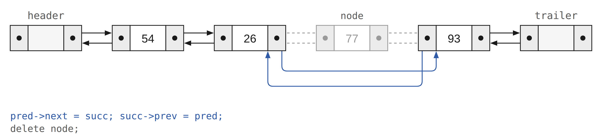
next 直接指向右鄰居 93，再讓 93 的 prev 指回 26。只改兩條連結，77 就不在串列中了，最後 delete 釋放它。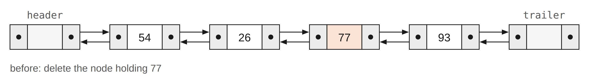
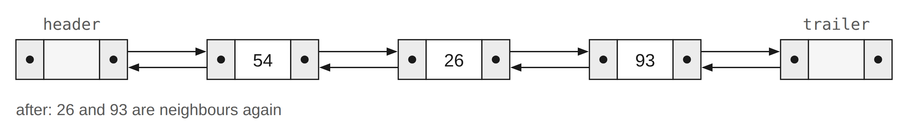
54 26 77 93 | 93 77 26 54 54 26 93 | 93 26 54 26 93 | 93 26 26 | 26
三次 erase 用的是同一個函式：刪 77 時兩側是 26 與 93；刪第一項 54 時左鄰居是 header；刪最後一項 93 時右鄰居是 trailer。每一行兩個方向的結果都互為反序。
要讓「刪除最後一個節點」變成 $O(1)$，需要哪種配置？
一條長度 n 的單向串列，size()（用走訪實作）與「取第 k 個元素」的成本分別是？
remove 邊界remove(item) 用 previous／current 兩個指標。要刪的是 head 指向的節點時，正確動作是？
remove 把節點從鏈結中移除後，若少了 delete current，會發生什麼事？
append()替 UnorderedList 加上 append(item)，把新元素接在尾端，使它成為最後一項。先自己寫寫看，再思考：你的方法時間複雜度是多少？
append 的一種寫法這個寫法要走到最後一個節點，所以是 $O(n)$；若類別另存 tail 指標，可以做到 $O(1)$。
UnorderedList 的 head 是 private，無法在類別外替它加成員函式。下面的 MyList 只保留 add 與 append，用來試跑這個寫法：
append：MyList77 31 17
append(31) 時串列是空的，新節點直接成為 head；add(77) 放到最前面；append(17) 從 77 走到 31，再接在 31 後面。
append 的成本上面的 append() 是 $O(n)$。要讓它變成 $O(1)$，正確的做法是？
header 節點講義提到，可以在串列最前面放一個不存資料的 header 節點來簡化 remove。改寫 UnorderedList，讓 head 永遠指向這個 header：remove 還需要「previous == NULL」的特殊情況嗎？add、size、search 與 isEmpty 要怎麼跟著調整？
size 的 $O(1)$ 版：把節點數存成資料成員，改寫 add、remove 與 size，讓 size() 變成 $O(1)$。remove 找不到時：確認 remove 在項目不存在時也能正確運作，並替空串列、找不到、刪頭端、刪尾端各寫一個測試。append、index、pop、insert，並分析各自的 Big-O。slice(start, stop)：回傳從 start 到 stop（不含）的新串列。OrderedList 與 UnorderedList 有許多相同的方法。設計繼承階層，讓共同的部分只寫一次。題目改寫自課本第 4 章 Programming Exercises 的第 4、5、9、10、12 題，以及第 13 至 15 題與第 17 題；完整題目見 cppds Programming Exercises。
下表整理本章各操作的成本；最右欄說明成本從哪裡來。
| 操作 | vector／連續陣列 | UnorderedList | OrderedList | 成本從哪裡來 |
|---|---|---|---|---|
isEmpty() | $O(1)$ | $O(1)$ | $O(1)$ | 只檢查一個值（陣列看 size，串列看 head） |
size() | $O(1)$ | $O(n)$ | $O(n)$ | 本課的串列沒有另存個數，要逐一計數 |
| 讀零起始的第 k 項 | $O(1)$ | $O(k+1)$ | $O(k+1)$ | 陣列用位址公式；串列要從 head 走 k 步 |
add(item) | 尾端攤銷 $O(1)$；頭插 $O(n)$ | $O(1)$ | 最壞 $O(n)$ | 無序版插在 head；有序版要先找位置 |
search(item) | $O(n)$；已排序可二分 $O(\log n)$ | $O(n)$ | $O(n)$，可提早停止 | 串列只能依序走訪 |
remove(item) | $O(n)$ | 最壞 $O(n)$ | 最壞 $O(n)$ | 先找到節點；接線本身是 $O(1)$ |
| 已知前驅時插入或刪除一個節點 | $O(n)$（要搬移） | $O(1)$ | $O(1)$ | 只改固定幾個指標（有序串列另須維持排序） |
append(item)（練習） | 攤銷 $O(1)$ | $O(n)$；另存 tail 可 $O(1)$ | 不適用 | 要先走到最後一個節點 |
同一列由左往右讀，可以看出兩種表示法互補：陣列的優勢在依位置讀取與尾端加入，串列的優勢在頭端或已知位置的插入與刪除。兩者的 search 都要逐一比較；陣列排序後可以二分搜尋，有序串列只能提早停止。選擇資料結構時，先列出程式最常執行的操作，再用這張表比較它們的成本。
next 指標維持元素的相對順序，元素不必連續存放；head 是唯一的入口，串列物件本身只保存 head，不包含節點。Node 存放 data 與 next 兩個 private 欄位，只能透過 getData、getNext、setData、setNext 存取；建構子把 next 設成 NULL，NULL 表示後面沒有節點。next，再修改 head 或前驅的 next，後段才不會遺失。size、search、remove 都靠走訪；remove 讓 previous 跟在 current 後面，找到後改前驅的 next（或 head），再 delete 節點。search 可以在越過目標時停止；add 用 current 先看下一個節點，找到位置後先接後段、再接前段。isEmpty() 與無序串列的 add 是 $O(1)$；size、search、remove 與有序串列的 add 最壞都是 $O(n)$。已知前驅時接線只要 $O(1)$，找到位置才是主要成本。header、trailer 哨兵，任何位置的插入與刪除都用同一套接線。std::list 或 std::forward_list；之後學遞迴時，也可以把串列看成「一個節點，加上剩下的串列」。Node 的 data 與 next 要設成 private？（補充）把欄位藏起來，所有修改都得經過 setData 與 setNext，類別就能控制節點怎麼被使用；串列類別也能確保自己擁有的節點只由它負責接線與釋放。代價是程式要多寫一層函式呼叫，例如 current->getNext() 而不是 current->next。STL 的容器更進一步，完全不讓使用者碰到節點，只提供迭代器。
環狀串列沒有 NULL，結束條件是「回到起點」。若寫成 while (current != head)，第一次檢查時 current 就等於 head，迴圈一次也不執行。do-while 先處理起點、前進之後才檢查，正好走完一圈。空串列要在進入迴圈前另外排除，否則會解參考 NULL。
delete 之後要不要把指標設成 NULL？（補充）delete 釋放的是指標所指的節點，指標變數本身仍保存舊位址，成為失效指標。若這個指標之後還會用到（例如類別的成員），把它設成 NULL，之後的 NULL 檢查才有作用；若它是即將結束的區域變數（例如 remove 裡的 current），設不設都不影響結果。重點是 delete 之後不能再透過它讀寫。另外，其他指向同一節點的指標並不會因此變成 NULL。
$O(1)$ 指的是已經握有位置（單向串列還要有前驅）之後，修改指標的成本。若位置要靠比對值或從 head 數過去才能找到，尋找就要 $O(n)$，整個操作也是 $O(n)$。鏈結串列的優勢出現在位置本來就已知的情況，例如一直在 head 操作，或在走訪的同時順便插入、刪除。
list 或 forward_list？（補充）需要在已知位置頻繁插入、刪除，而且手上已有迭代器時。list 是雙向的，給一個迭代器就能在它前面插入，或刪除它本身；forward_list 只能往後走，操作時要提供前驅的位置（insert_after、erase_after），但每個節點少存一個指標。若主要是依索引讀取或循序掃描，vector 通常較合適。
CPU 讀取記憶體時，會把相鄰的一小段資料一起載入快取（cache）。陣列元素連續存放，讀 a[i] 時，a[i+1]、a[i+2] 多半也已經在快取裡；串列的節點分散在 heap 各處，每走一步都可能讀到不在快取中的位置。因此即使兩者的走訪都是 $O(n)$，實際執行時陣列常常快得多。
ch4.json · 11 張詞彙卡取自本章課程題庫，已譯為繁體中文，正面附英文原名。先看正面術語，試著說出定義，再翻面核對；不熟的詞可以洗牌後再練習。